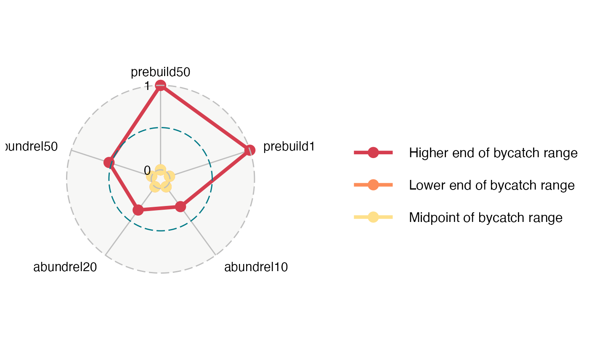

ggradar.RdRadar plot
ggradar( plot.data, axis.labels = colnames(plot.data)[-1], grid.label.size = 7, axis.label.size = 8, plot.legend = if (nrow(plot.data) > 1) TRUE else FALSE, legend.text.size = grid.label.size, palette.vec = c("#D53E4F", "#FC8D59", "#FEE08B", "#E6F598", "#99D594", "#3288BD"), manual.levels = NA )
| plot.data | a dataframe with performance measures as columns and management scenarios as rows |
|---|---|
| axis.labels | a vector of names for the performance measures |
| grid.label.size | a numeric value for grid label size |
| axis.label.size | a numeric value for axis label size |
| plot.legend | logical; whether or not to plot a legend to the right of the plot |
| legend.text.size | numeric value for size of legend text |
| palette.vec | a vector of colors to use for the different scenarios (each row = 1 color) |
| manual.levels | a vector if you want to manually set factor levels |
I modified the `ggradar()` function slightly to do nice things that I like, like use a custom color palette, including different line types, etc.
Since this code was originally written, ggradar has becomes its own standalone package. For more information and for the most current version of the function, see Ricardo Bion's GitHub
Ricardo Bion, modified slightly by Margaret Siple
plot.data <- data.frame( bycatch = factor(c( "Lower end of bycatch range", "Midpoint of bycatch range", "Higher end of bycatch range" )), prebuild50 = c(0, 0, 1), prebuild100 = c(0, 0, 1), abundrel10 = c(0, 0, 0.29), abundrel20 = c(0, 0, 0.34), abundrel50 = c(0, 0, 0.53) ) ggradar( plot.data = plot.data, axis.label.size = 4, grid.label.size = 4 )